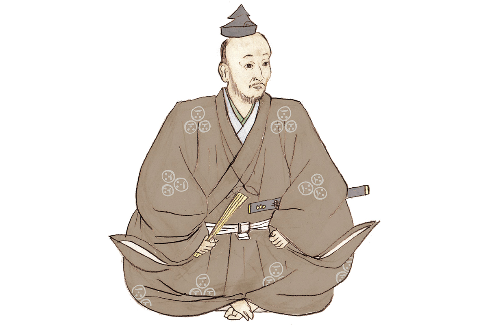
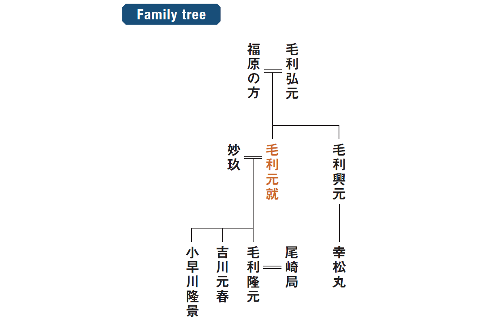
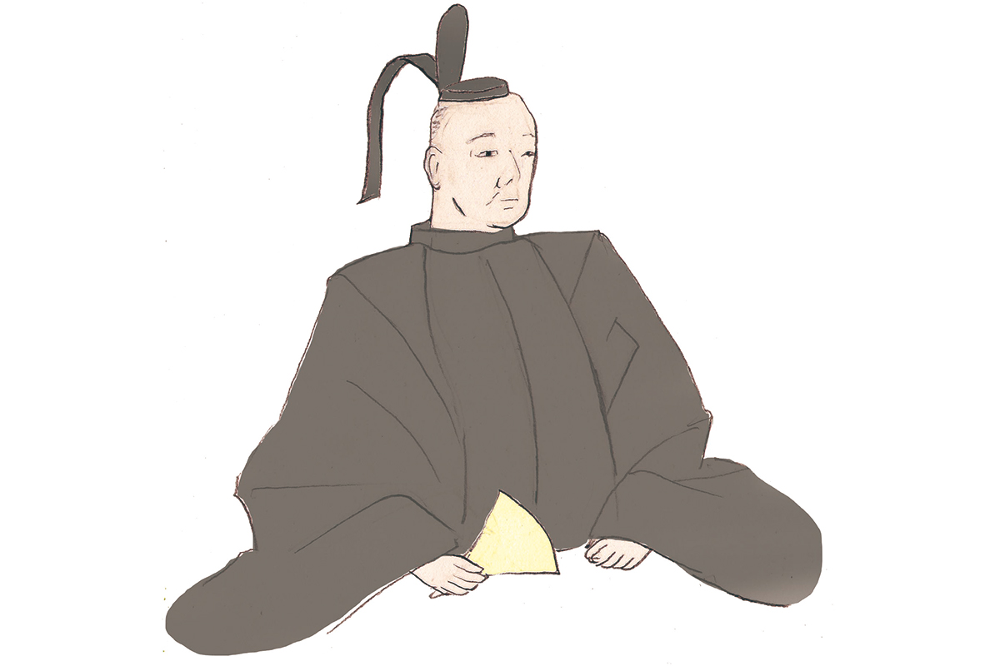
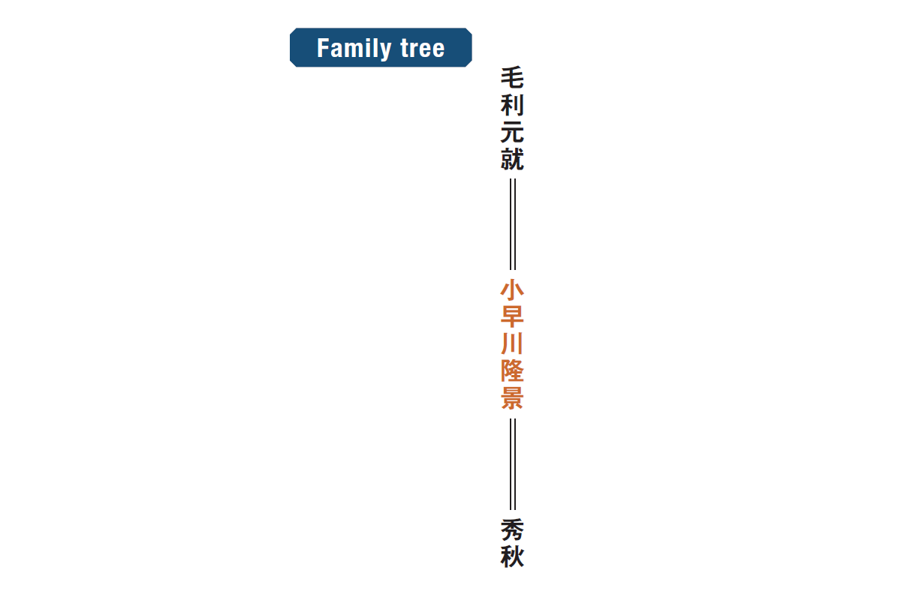
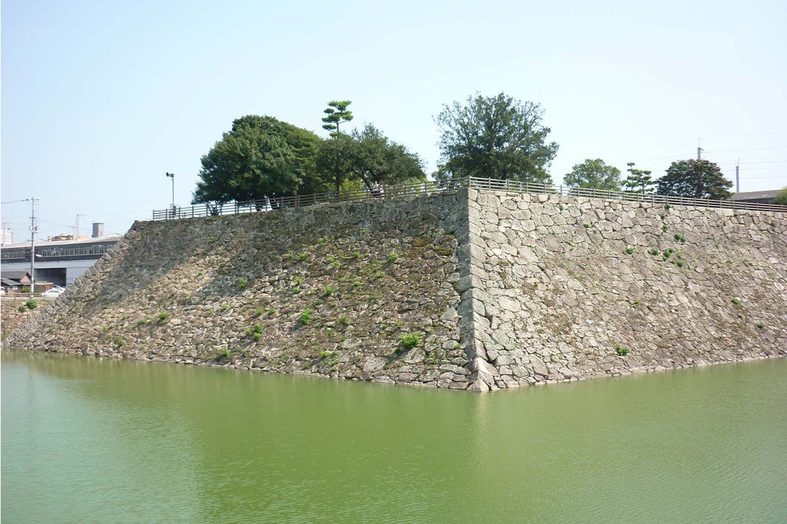
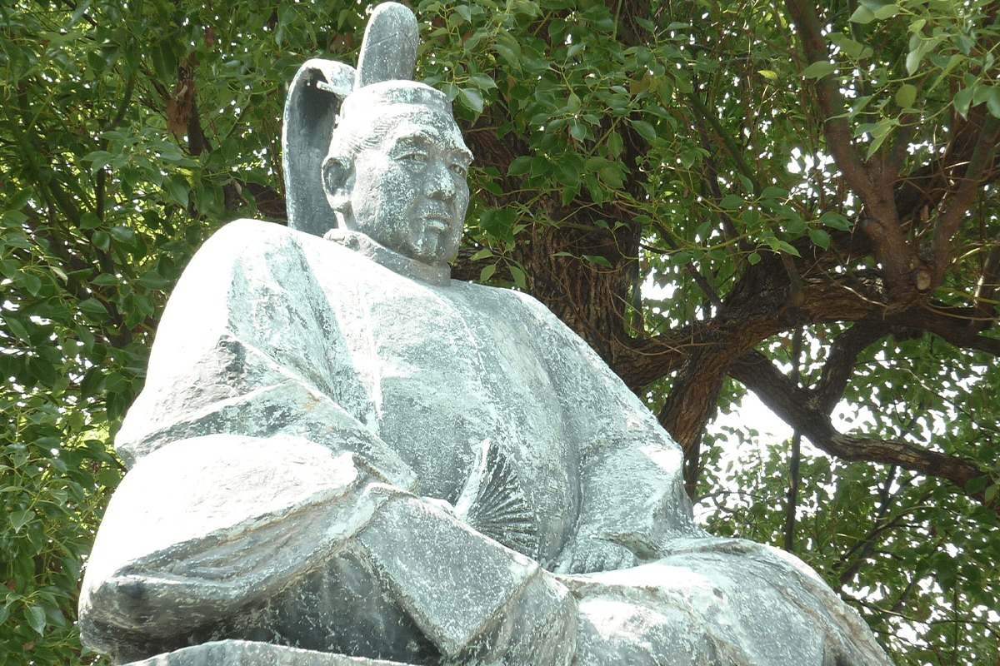

Префектура Хиросима · Аки · история
Мотонари Мори и Такакагэ Кобаякава: полководцы эпохи Сэнгоку

В эпоху Сэнгоку западной Японией правили отец и сын. Мотонари Мори из небольшого горного замка поднялся до хозяина десяти провинций, а его третий сын Такакагэ Кобаякава стал одним из тех, кому доверял объединитель Хидэёси Тоётоми.
Эпоха
Запад Японии между двумя силами
Конец пятнадцатого и весь шестнадцатый век Япония провела в войнах. Сёгунат Муромати окончательно потерял власть, на место старых наместников пришли военачальники, которые делили страну на владения. На западе, в области Тюгоку, друг другу противостояли два сильных дома: Амаго, державший побережье Японского моря, и Оути, которому подчинялись берега Внутреннего Японского моря и север Кюсю. Мелкие владетели Аки и Бинго оказались между ними и каждый раз решали, под чью руку встать, чтобы сохранить свою землю.
Отец
Мотонари Мори: расчёт вместо силы
Мотонари Мори (1497–1571) родился в провинции Аки, в западной части нынешней Хиросимы. Детство вышло тяжёлым: семья едва сводила концы с концами, после смерти родителей мальчика выгнали из родового замка. В 1523 году он всё же унаследовал главенство в роду и принял имя Мотонари, а расширять влияние начал, примкнув к Ёсиоки Оути.

Отношения с Оути испортились, когда их фактическим хозяином стал Харуката Суэ (1521–1555), поднявший мятеж против собственного господина. В 1555 году на острове Миядзима произошла битва, ставшая одной из трёх знаменитых неожиданных побед в японской истории: три тысячи воинов Мори разбили двадцатитысячную армию Суэ. Эта победа открыла Мотонари дорогу к объединению всего Тюгоку.
Славу он получил как мастер уловок: шёл на подкуп и тайные убийства, если это приносило победу, и потому его называли «мудрым полководцем эпохи». При этом его любили: в 1540 году, когда тридцатитысячное войско Амаго осадило родовой замок Корияма, вместе с гарнизоном в крепости заперлись восемь тысяч простых жителей. А история о трёх стрелах, которыми Мотонари связал воедино своих сыновей, лучше всего описывает его самого: одну стрелу сломать легко, три вместе сломать уже не выйдет.
В 1566 году он уничтожил дом Амаго и умер в 1571 году в том же замке Корияма.
Сын
Такакагэ Кобаякава: третий сын
Такакагэ Кобаякава (1533–1597) родился в провинции Аки третьим сыном Мотонари. В 1544 году он унаследовал главенство в одной ветви рода Кобаякава, а в 1550 году объединил обе, и дальше воевал уже под этим именем.

В битве 1555 года на Миядзиме он командовал флотом Мори. Именно Такакагэ договорился с могущественным пиратским родом Мураками и получил на один день триста кораблей, перекрыл море и отрезал армию Суэ от подхода подкреплений. Позже он воевал против Амаго, а в 1576 году в первой битве при Кидзугавагути разбил флот Оды. Когда в 1583 году Хидэёси Тоётоми одолел своего соперника, Такакагэ перешёл на его сторону и участвовал в походе на Кюсю, за что получил владения в трёх провинциях. В 1595 году он передал главенство приёмному сыну и ушёл на покой, а в 1597 году умер в замке Михара.

Всю жизнь Такакагэ держался завета отца: не стремиться к власти над всей страной. Именно эта сдержанность и огромный талант заставили Хидэёси сказать, что Японию можно доверить только Канацугу Наоэ и Такакагэ Кобаякаве.
Где увидеть
Пять мест в Хиросиме
- Руины замка Корияма в Акитакате. Главная крепость Мотонари занимала целую гору с валами и укреплениями; сегодня это одна из ста крупнейших крепостей Японии, а у подножия стоит памятник «трём стрелам».
- Историко-краеведческий музей Акитакаты у подножия той же горы. Здесь собраны документы рода Мори, находки с раскопок и макет замка Корияма.
- Могила Мотонари Мори на склоне рядом с замком. К ней ведёт тропа через сосновый лес.
- Святилище Ицукусима на Миядзиме. В 1555 году здесь стояла крепость-приманка, вокруг которой развернулась битва Мотонари с армией Суэ.
- Руины замка Михара в городе Михара. Крепость заложил в 1567 году Такакагэ Кобаякава, соединив насыпью два острова; сегодня от неё остались каменная кладка и ров, а рядом стоит статуя полководца.


Фото: Мария Араи.